vLLM 把 KV cache 變成像 OS page table 一樣可分頁、可共享、可 preempt 的 memory substrate。
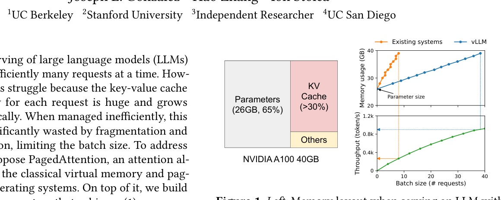
vLLM 的關鍵不是把 attention kernel 做得更快，而是讓 memory layout 不再決定 batchability。
PagedAttention 允許 logical KV cache 連續、physical memory 不連續；因此 request 可以動態 grow、跨 sample/beam 共享，最後在相同 latency 下拿到 2-4x throughput。
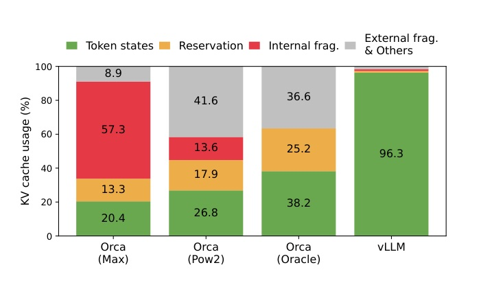
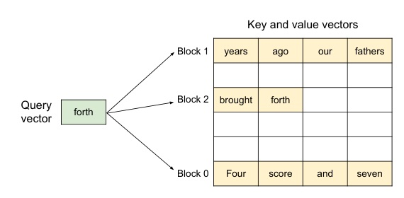
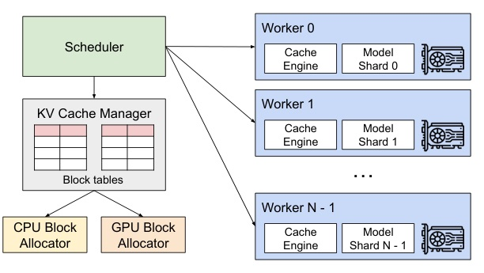
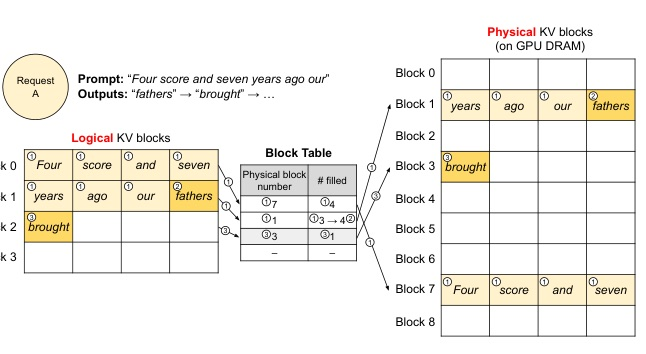
PagedAttention 用 kernel indirection 買回 batch size headroom。
微觀上 block table access 讓 attention kernel 慢 20%-26%；系統層卻因 KV memory 幾乎不浪費，能塞進更多 concurrent requests，end-to-end throughput 反而大幅提升。
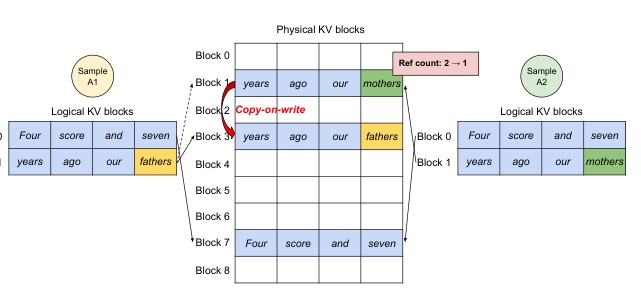
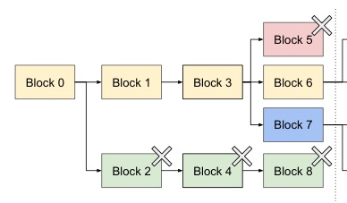
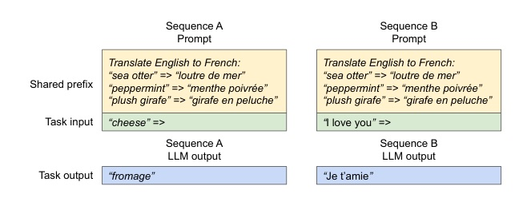
| Axis | Setup | Source |
|---|---|---|
| Models | OPT 13B / 66B / 175B; LLaMA 13B | §6.1 p.10 |
| Hardware | Google Cloud A2, NVIDIA A100; up to 8x A100-80GB | Table 1 p.9 |
| Workloads | ShareGPT and Alpaca; Poisson arrivals | §6.1 p.10 |
| Baselines | FasterTransformer; Orca Max / Pow2 / Oracle | §6.1 p.10 |
| Metric | normalized latency; sustainable request rate at similar latency | §6.1 p.10 |
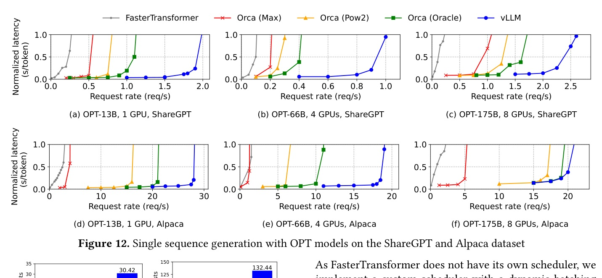
| OPT-13B trace | Orca Max | Orca Pow2 | Orca Oracle | vLLM |
|---|---|---|---|---|
| ShareGPT @ 2 req/s | 7.00 | 9.81 | 13.62 | 30.42 |
| Alpaca @ 30 req/s | 7.00 | 43.24 | 72.75 | 132.44 |
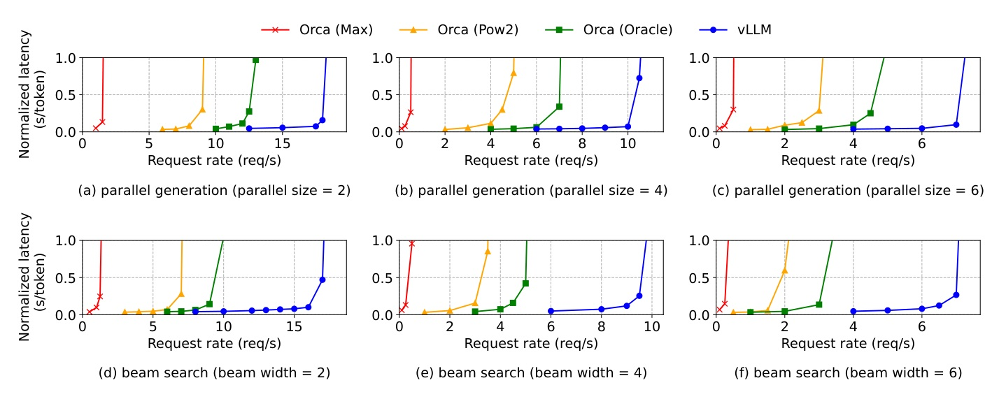
| Workload | Parallel sampling saving | Beam search saving |
|---|---|---|
| Alpaca | 6.1%-9.8% | 37.6%-55.2% |
| ShareGPT | 16.2%-30.5% | 44.3%-66.3% |
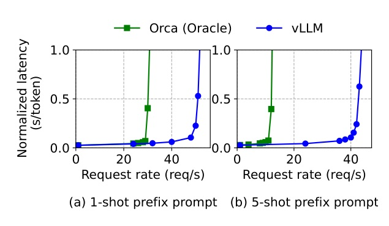
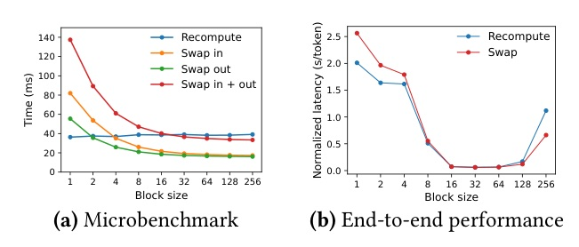
vLLM 的持久價值，是把 LLM serving 問題重寫成 memory management 問題。
如果一個系統的 effective batch size 被 dynamic state memory 卡住，先問 allocation / sharing / recovery，再問 kernel 是否已經極致。這篇就是那個順序的範例。
vLLM improves the throughput of popular LLMs by 2-4x with the same level of latency compared to the state-of-the-art systems, such as FasterTransformer and Orca.
vLLM 在相同 latency 水準下，對 popular LLM serving throughput 比 FasterTransformer / Orca 提升 2-4x。Abstract p.1 lines 25-29
only 20.4% - 38.2% of the KV cache memory is used to store the actual token states in the existing systems.
既有系統的 KV cache 真正用來放 token states 的比例只有 20.4%-38.2%，大部分被 reservation / fragmentation 吃掉。§1 p.2 lines 182-184
PagedAttention allows storing continuous keys and values in non-contiguous memory space.
PagedAttention 讓邏輯連續的 keys / values 可以放在 physical non-contiguous memory，這是整篇 paper 的最小改動點。§4.1 p.5 lines 545-550
vLLM limits all the memory wastes for a request within one block.
因為只在上一個 logical block 滿了才 allocate 新 physical block，單 request waste 被限制在一個 block 內。§4.3 p.6 lines 829-835
This leads to 20-26% higher attention kernel latency ... Despite the overhead, PagedAttention makes vLLM significantly outperform FasterTransformer in end-to-end performance.
kernel 微觀上較慢 20%-26%，但系統端靠 batchability 與 memory utilization 贏回來。§7.1 p.12 lines 1750-1762
In DNN training, the tensor shapes are typically static ... introducing the vLLM's techniques may rather degrade the performance due to the extra overhead of memory indirection.
作者明確說這套 paging 不適合所有 GPU workload；若 shape static 或 compute-bound，indirection 可能反而傷害效能。Discussion p.13 lines 1849-1865
今天這份: vLLM / PagedAttention - a systems paper hiding inside a trending repo.